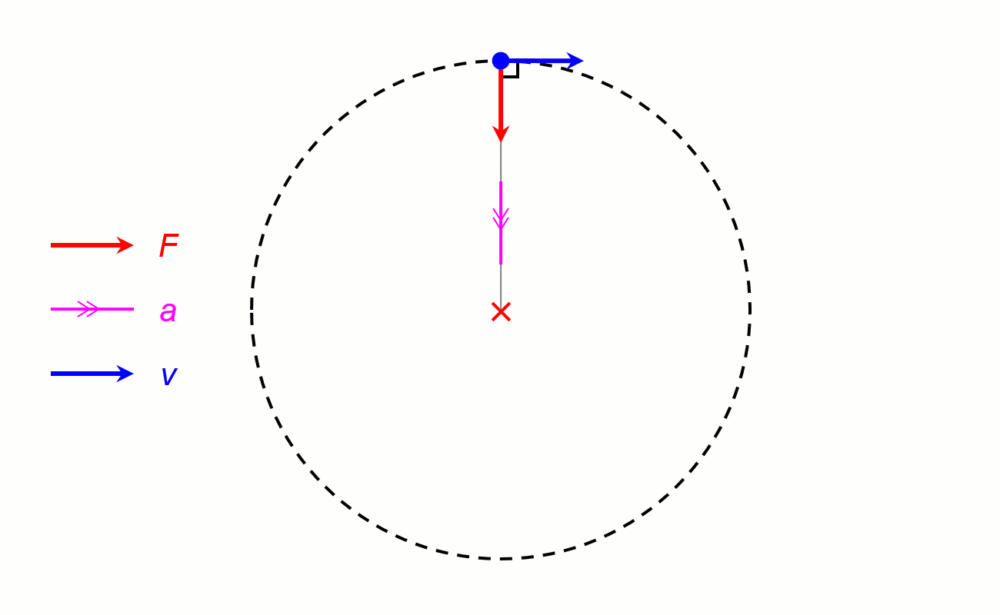

Problem 1
Orbital Period and Orbital Radius
Project Documentation
Simulation
1. Derivation of the Relationship
For a circular orbit, the gravitational force provides the centripetal force required to keep an object (mass \(m\)) orbiting a central body (mass \(M\)) at radius \(r\).
Gravitational Force
\[F_g = \frac{G M m}{r^2}\]
where \(G\) is the gravitational constant (\(6.67430 \times 10^{-11} \, \text{m}^3 \text{kg}^{-1} \text{s}^{-2}\)).
Centripetal Force
For circular motion with orbital speed \(v\) and period \(T\):
\[v = \frac{2\pi r}{T}\]
Centripetal force:
\[F_c = \frac{m v^2}{r} = \frac{m}{r} \left( \frac{2\pi r}{T} \right)^2 = \frac{4\pi^2 m r}{T^2}\]

Equate Forces
\[\frac{G M m}{r^2} = \frac{4\pi^2 m r}{T^2}\]
Cancel \(m\) (assuming \(m \neq 0\)):
\[\frac{G M}{r^2} = \frac{4\pi^2 r}{T^2}\]
Rearrange:
\[T^2 = \frac{4\pi^2}{G M} r^3\]
Thus:
\[T^2 = k r^3\]
where \(k = \frac{4\pi^2}{G M}\) is a constant for a given central mass \(M\). This is Kepler’s Third Law for circular orbits.
2. Implications for Astronomy
- Mass Determination: If \(T\) and \(r\) are measured (e.g., via observation), \(M\) can be calculated:
\[M = \frac{4\pi^2 r^3}{G T^2}\]
This is how we estimate the Sun’s mass using Earth’s orbit or Earth’s mass using the Moon’s orbit.
- Distance Calculation: Knowing \(T\) and \(M\), solve for \(r\):
\[r = \left( \frac{G M T^2}{4\pi^2} \right)^{1/3}\]
- System Scaling: For planets orbiting the Sun, \(T^2 / r^3\) is constant, allowing comparisons across the Solar System.